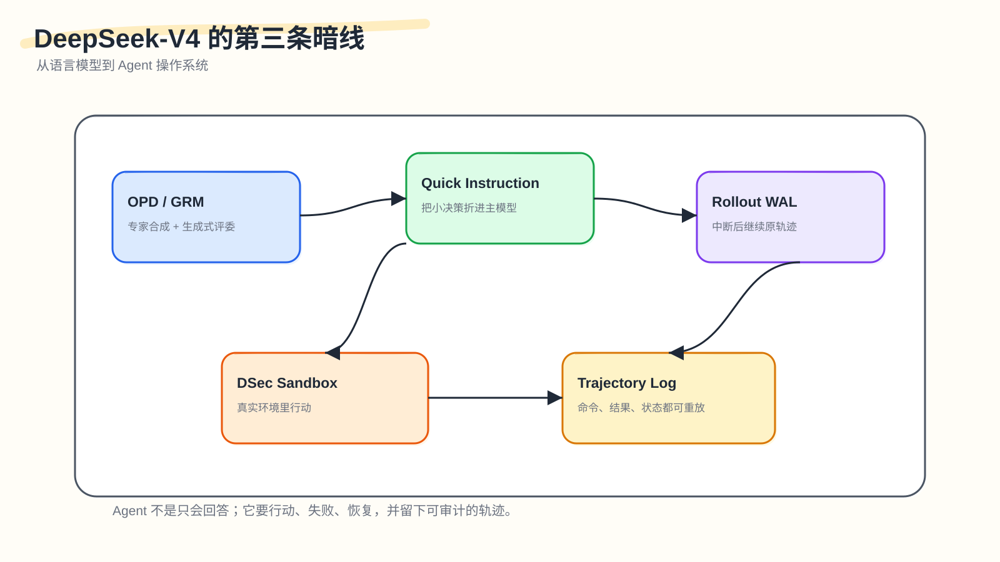
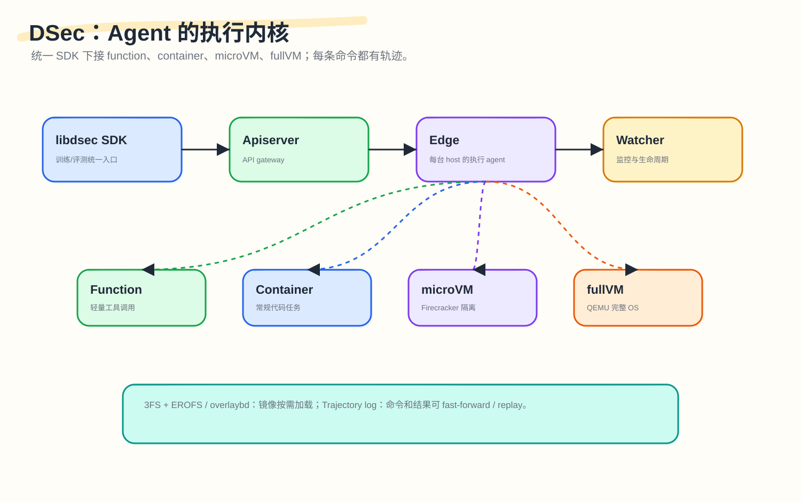
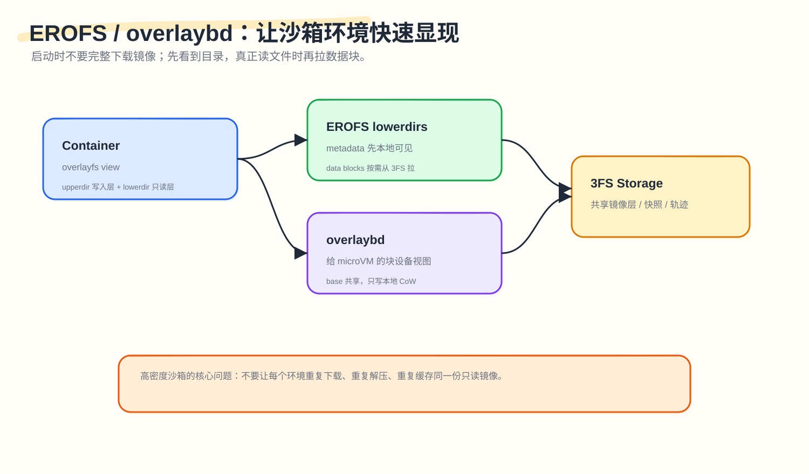

DeepSeek‑V4 的暗线之三：从语言模型到 Agent 操作系统

前两篇分别讲了两件事。
第一篇讲记忆：DeepSeek‑V4 为什么能承受 1M 上下文。它把历史分层：近处看原文，中距离压缩后检索，远处重压缩后扫全局。
第二篇讲控制：这么复杂的模型怎么训练和部署。TileLang、deterministic kernel、FP4 QAT、Muon-ZeRO、Context Parallelism、KV Cache OS，都是为了防止复杂性失控。
第三篇讲行动。
行动和回答不一样。回答是模型输出一段文本。行动是模型进入一个环境，调用工具，运行命令，修改文件，失败，恢复，继续。Agent 一旦开始行动，系统问题就变了：它生成的是一条轨迹，面对的是不断变化的环境，失败也不只是答错，还可能是工具调用错、沙箱状态乱、命令重复执行、rollout 数据分布偏掉。
所以这一篇的问题是：
DeepSeek‑V4 怎么把语言模型变成能长程行动的系统？
这不是一句"支持 tool calling"能解释的。V4 里至少有几层设计：
- OPD：先训练多个 specialist，再把专家能力蒸馏回统一模型；
- GRM：难验证任务里，奖励函数不只打分，还要能生成评价；
- Quick Instruction：把"要不要搜、搜什么、要不要读 URL"这类小决策折进主模型；
- Rollout WAL：RL rollout 被抢占后继续原轨迹，不从头重采样；
- DSec：给 Agent 一个真实、隔离、可恢复、可重放的执行环境；
- EROFS / overlaybd / trajectory log：让海量沙箱快速启动、按需加载、可审计；
- Real-world tasks：最后用真实写作、搜索、办公、代码 Agent 任务检验它能不能干活。
Hugging Face 对 V4 的解读也把 Agent 放在核心位置：V4 的价值在于让长程 agentic workload 更可用，1M context 只是入口；它专门提到 interleaved thinking across tool calls、|DSML| 工具调用格式，以及 DSec 这个为 RL rollouts 建的沙箱平台。(Hugging Face)
1. 行动的第一步：不要让一个模型同时被十个目标拉扯
Post-training 里最容易犯的错，是把所有任务混在一起做 RL。
数学希望模型长推理。
聊天希望模型简洁。
代码希望模型严格跑测试。
Agent 希望模型愿意多步尝试。
写作希望模型风格自然。
指令遵循希望模型少发挥。
如果这些目标一起拉一个模型，很容易互相干扰。
V4 的做法更像分科训练。
先训练多个 specialist experts。每个 specialist 针对自己的领域做 SFT，再用 GRPO 做 RL。数学模型按数学任务练，代码模型按代码任务练，Agent 模型按工具和环境交互练，指令遵循模型按对话质量练。
然后用 OPD，把这些 specialist 的能力合回一个统一模型。

OPD，全称 On-Policy Distillation。这里的关键词是"on-policy"，“蒸馏"只是表面描述。
普通离线蒸馏从固定数据集出发，让 teacher 给答案或 logits，student 跟着学。OPD 翻转了这个顺序：student 先自己生成轨迹，teacher experts 在这些轨迹上给分布，student 再学这些分布。
这个区别比看起来的更重要：student 学到的是自己真实会走到的状态，而不是一个静态数据集里的状态。对于 Agent 尤其重要，因为 Agent 的中间状态很多：工具返回、命令失败、文件变化、环境异常。模型如果只在离线答案上学，很容易没见过自己实际行动时会遇到的坑。
V4 还强调 full-vocabulary logit distillation。许多蒸馏为了省资源，只在采样 token 上近似 KL。这样便宜，但梯度方差更大。V4 选择更贵的 full-vocab KL，因为它能更稳定地把 teacher 的分布信息转给 student。代价是巨大：多个 teacher、超大词表、长轨迹，如果直接存 logits，会爆内存和存储。V4 的工程做法是只缓存 teacher hidden states，训练时再按需过 teacher prediction head 重建 logits；mini-batch 还按 teacher index 排序，让 GPU 上任意时刻最多驻留一个 teacher head。(DeepSeek-AI)
V4 的做法不是把几个模型的权重硬合并：它让统一模型在自己的行为轨迹上，学习多个专家的判断分布。这对 Agent 尤为关键，因为专家之间的分布差异，本身就是 Agent 需要学会权衡的东西。
2. GRM：难验证任务里，奖励函数要会解释
数学和代码有一个好处：可以验证。
数学可以比最终答案。
代码可以跑 unit tests。
如果答案错了，reward 低；测试过了，reward 高。
但 Agent 和办公任务经常不是这样。
比如：写一份市场分析、规划一个调研流程、在代码仓库里定位一个隐蔽 bug、根据多个网页做出一个判断。这些任务没有单一标准答案。一个回答好不好，往往要看多条标准：是否完整、是否符合用户约束、是否事实可靠、是否格式正确、是否工具调用合理、是否遗漏关键风险。
传统 scalar reward model 会把这些压成一个数字：
|
|
这个数字能训练，但不容易调试。模型为什么得高分？因为事实对？因为语气好？因为迎合了 reward model 的某种偏好？很难看清。
V4 引入 Generative Reward Model。GRM 可以理解成"会写评语的奖励模型”。它读 prompt、answer、rubric，然后生成 critique / verdict，再把 verdict 转成 RL 需要的 reward。论文里也说，对 hard-to-verify tasks，V4 使用 rubric-guided RL data，并让 actor network 本身承担 GRM 角色，使生成能力和评价能力一起优化。(DeepSeek-AI)
一个简单例子：
|
|
这比一个黑盒分数更容易调试。它也更适合 Agent，因为 Agent 的输出不只是最终答案，还包括中间动作：查了什么、运行了什么、为什么修改文件、失败后怎么恢复。
当然，GRM 也有风险。actor 自己当评委，可能自我强化。模型可能学会迎合 rubric 表面形式，而不是真的变好。这需要人工标注、盲评、独立验证集、reward 版本控制来校准。
当任务没有标准答案时，reward 不能只会打分——它最好还能说明为什么。GRM 在解决的就是这个问题。
3. Quick Instruction：把前置小决策折进主模型
真实聊天系统在正式回答前，经常要做一堆小判断：要不要联网搜索？搜的 query 是什么？需要权威来源吗？属于哪个领域？用户贴了 URL 要不要读？对话标题叫什么？
传统做法可能是额外调用小模型或分类器。问题是：小模型要重新读 prompt。长上下文下，重复 prefill 很贵。
V4 的 Quick Instruction 用特殊 token 触发这些内部任务。比如：
|
|

主模型已经读过上下文，不要再让多个小模型分别读一遍——直接给主模型一张任务卡，让它输出短结果。
它和 tool calling 不是一回事。Quick Instruction 更像工具调用前的 routing/gating：先判断要不要搜，再生成 query，再决定读哪些 URL，最后才进入正式回答或工具调用。
V4 还引入了 |DSML| special token 和 XML 风格的工具调用格式。Hugging Face 解读也提到，V4 的工具调用格式使用 dedicated tokens 和 XML-based schema，减少 JSON-in-string 工具调用里的 escaping failure。(Hugging Face)
Agent 系统里有很多小决策，这些小决策不值得每次重新 prefill 一个小模型——Quick Instruction 把这个成本折进主模型的一次 forward。但小决策只是 Agent 推理链的开始；当模型生成一条完整的 RL rollout 轨迹，这条轨迹本身的完整性也需要保证。
4. Rollout WAL：中断后继续原轨迹
RL rollout 是训练数据生产，不是普通聊天。
模型对 prompt 生成一条 trajectory。然后 reward model、teacher、verifier 或环境给反馈。这个 trajectory 会被拿去训练模型。
大规模 rollout 会跑在 GPU 集群上。集群里任务可能被 preemptive scheduler 抢占，硬件也可能故障。最粗暴的做法是：失败就从头再生成一遍。
V4 论文指出，这样做在数学上不对，因为会引入 length bias。(DeepSeek-AI)
为什么？
假设有三条回答，长度分别是 20 tokens、200 tokens 和 2000 tokens。如果机器经常中断，短回答很容易在中断前完成，长回答更容易被打断到一半。如果打断后从头重采样，长回答就会被多次重新抽样。重新抽样有可能抽到更短版本，或者提前结束。久而久之，数据会偏向短 completion。
所以 V4 做 token-granular WAL。
每生成一个 token，就写一条日志。正常抢占时，系统保存未完成请求的 KV cache。恢复时，用 WAL 和 KV cache 从中断点继续 decode。如果是 fatal hardware error，KV cache 来不及保存，也可以用 WAL 里的 tokens 重新 prefill，重建 KV cache，再继续 decode。

这件事和数据库的 Write-Ahead Log 很像。数据库里，WAL 的原则是先把变更写日志，再修改主状态；崩溃后可以重放日志恢复。LLM rollout 里，日志对象从"数据库更新"变成了"已经生成的 token"。(WAL)
就像写作文时每字自动保存——断电后不必重写一篇，打开文档从最后一个字继续。训练中断不应该改变采样分布，这比省算力更重要。省算力是工程收益；避免 length bias 是统计正确性。
WAL 解决的是轨迹的完整性。下一个问题是：这条轨迹在哪里执行？
5. DSec：Agent 需要一个真实、隔离、可恢复的环境
一个能行动的 Agent，不能只在文本里"假装会操作"。它要真的跑命令、改文件、装依赖、执行测试。
这需要 sandbox。
普通 sandbox 只要能执行代码就行。Agent 训练用的 sandbox 要更复杂：要安全隔离（模型可能运行不可信代码），要启动快（RL 会创建海量环境），要支持高密度并发，要可恢复（训练任务会被抢占），还要可重放（失败轨迹需要 debug）。
V4 的 DSec，也就是 DeepSeek Elastic Compute，就是为这个做的。

论文说 DSec 由三个 Rust 组件构成：Apiserver（API gateway）、Edge（每台 host 上的 agent）、Watcher（cluster monitor）。对上，它通过统一 Python SDK libdsec 暴露接口；对下，支持四种 execution substrates：Function Call、Container、microVM、fullVM。
Function Call 适合轻量无状态工具调用。
Container 适合大多数代码任务。
microVM 基于 Firecracker，适合更强隔离的不可信代码。
fullVM 基于 QEMU，适合需要完整 OS 的任务。
Firecracker 是 AWS 开源的轻量虚拟化技术，基于 Linux KVM，目标是把容器的速度和资源效率与传统 VM 的安全隔离结合起来。AWS 官方介绍中提到，Firecracker 通过最小化设备模拟来降低启动时间和内存 footprint，并为每个容器提供 trusted sandbox environment。(Firecracker)
这正好对应 Agent sandbox 的需求：模型生成的代码不可信，但任务数量巨大，不能每次都用很重的 VM。
Agent 训练的不是语言输出，而是模型在真实环境里的行为——这意味着训练基础设施也要能真正执行：运行命令、改变状态、承受失败。
6. EROFS / overlaybd：环境不能每次完整下载
Agent sandbox 还有一个很现实的问题：镜像很大，环境很多。
代码任务可能需要各种依赖环境：Ubuntu + Python、Node + pnpm、Rust toolchain、CUDA libraries、benchmark repo、browser environment、database。如果每个 sandbox 启动时都完整下载、解压镜像，RL rollout 会被环境启动拖死。
V4 的 DSec 用 layered, on-demand loading。
对 container，它把 base images 和 filesystem commits 做成 3FS-backed readonly EROFS layers，挂到 overlay lowerdirs。mount 时 metadata 本地可见，真正的数据块按需从 3FS 拉。(DeepSeek-AI)
EROFS 是 Linux 的 Enhanced Read-Only File System。Linux kernel 文档说，它是通用只读文件系统方案，强调简单、随机访问友好、高性能，支持 compact layout、transparent file compression、direct access，特别适合内存有限设备和 high-density hosts with numerous containers。(EROFS)

对 microVM，DSec 用 overlaybd。overlaybd 是一种 block-level layered image format，给 container、secure container 和 VM 提供由多层 block-based layers 合成的虚拟块设备视图，也是 DADI 论文的开源实现之一。(overlaybd)
Container 侧按需拉取：先呈现完整目录树，真正读某个文件时再从 3FS 拉对应数据块；microVM 侧 base layer 共享，写入进入本地 copy-on-write 层。目的很实际：节省启动时间、存储带宽和内存占用，和优雅无关。
7. trajectory log：不要重新执行已经执行过的命令
DSec 的另一个关键点是 trajectory log。
Agent 在 sandbox 里执行任务，可能会做这些事：
|
|
这些命令有些不是幂等的——rm -rf tmp、git commit、pip install、写数据库、调用外部服务、修改文件，重跑会改变状态，甚至得到不同结果。如果训练任务被抢占后恢复，不能简单把所有命令重新执行一遍。
所以 DSec 为每个 sandbox 维护 globally ordered trajectory log，记录每次 command invocation 和结果。恢复时，已经执行过的命令可以 fast-forward，直接返回日志里的结果；没执行过的命令才继续真实执行。论文说 trajectory log 支持 client fast-forwarding、fine-grained provenance 和 deterministic replay。(DeepSeek-AI)
这和 rollout WAL 是同一个思想，只是对象不同：
| 系统 | 记录对象 | 目的 |
|---|---|---|
| Rollout WAL | 每个生成 token | 中断后继续原采样轨迹 |
| DSec trajectory log | 每条命令和结果 | 恢复后不重跑非幂等操作 |
所以，Agent 系统里，轨迹才是最重要的状态，最终答案只是轨迹的一个切片。
8. 沙箱规模扩大后：基础设施本身会变成瓶颈
论文说：DSec 做 memory reclamation 和 duplicate page-cache footprint 缓解，从而支持 safe overcommitment；DSec 还缓解了 container runtime 的 spinlock contention，提高 per-host packing density。
先说 page cache。
很多 sandbox 会用同一个 base image。理想情况下，同一份只读镜像内容应该共享。糟糕情况下，每个 container / microVM 都缓存一份，甚至 guest OS 缓一份，host block backend 又缓一份。sandbox 数量一大，这会浪费大量内存。
EROFS 这种只读共享层、overlaybd 的共享 base layer、按需加载，都有助于减少重复缓存。Linux EROFS 文档也明确提到它适合 high-density hosts with numerous containers，并提供 compact layout、compression、direct access 等设计。(EROFS)
memory reclamation 的目标是：在 safe overcommit 下，回收那些可以丢、可以重读、可以重建的内存，比如只读镜像的冷缓存页、idle sandbox 的冷页，而不是随便回收会破坏任务状态的匿名内存。
再说 spinlock contention。
几十万 sandbox 并发启动、销毁、执行命令时，通用 container runtime 的某些全局锁或热路径可能变成 CPU 瓶颈。很多线程拿不到锁，会在 spinlock 上忙等，CPU 用在等锁上，而不是执行任务。
合理方向通常包括：预热池（Function Call 走预热 container pool）、分片状态（减少全局锁）、批量/异步 lifecycle（降低同时进入临界区的频率）、per-host Edge 接管热路径（减少反复调用通用 runtime）、镜像层预挂载/缓存（减少启动时 mount 和 metadata 操作）。
sandbox 数量从几百变成几十万时，Docker/runtime 本身会变成系统瓶颈——这和任何系统扩大规模时遇到的问题没有本质区别。
9. Real-world tasks：最后要看能不能干活
V4 论文里的 real-world tasks 很值得看，因为它不只报标准 benchmark，还评了更接近真实产品场景的任务：中文写作、Search、White-Collar Task、Code Agent。
Hugging Face 的 V4 解读也说，V4 的 benchmark 数字有竞争力但不是绝对 SOTA；真正创新在于它面向高效长上下文和 agentic tasks 的设计。(Hugging Face)
9.1 Search：RAG 和 Agentic Search 的区别
DeepSeek web/app 的 non-think mode 使用 RAG，thinking mode 使用 agentic search。内部评测中，Agentic Search 对 RAG 的总体胜率是 61.7% vs 18.3%，tie 20.0%。但它也更贵：平均 16.2 次 tool calls、13,649 prefill tokens、1,526 output tokens。(DeepSeek-AI)
这说明一件很朴素的事：Agentic Search 更强，但不是免费的。所以系统要决定什么时候用它。Quick Instruction 这种前置小决策，就属于这个大问题的一部分。
9.2 Code Agent：不只是能写代码，而是能在环境里修代码
V4 的 Code Agent 评测来自内部工程师提供的真实研发任务，覆盖 feature development、bug fixing、refactoring、diagnostics，技术栈包括 PyTorch、CUDA、Rust、C++。严格筛选后形成 30 个任务。V4-Pro-Max pass rate 67%，高于 Claude Sonnet 4.5 的 47%，接近 Claude Opus 4.5 的 70%，但低于 Opus 4.6 Thinking 的 80%。(DeepSeek-AI)
这个结果的意义不是"V4 已经最强"。它说明 V4 的系统设计确实在真实代码任务上兑现了一部分价值。
因为代码 Agent 的能力不是只由模型输出决定，还由环境系统决定：能不能快速启动 sandbox，能不能运行测试，能不能恢复中断，能不能记录轨迹，能不能避免重复执行破坏环境，能不能在长上下文里保留工具历史。
9.3 White-Collar Task 和中文写作
办公任务和中文写作看起来离 sandbox 远一点，但它们也体现了同一个方向：模型不只是答题，而是交付。论文中的 white-collar task 评测包括 Task Completion、Instruction Following、Content Quality、Formatting Aesthetics 等维度。中文写作则区分 functional writing 和 creative writing。(DeepSeek-AI)
这些任务很难用单一标准答案评估，也解释了为什么 GRM 和 rubric-guided RL data 重要。
10. 把行动系统放在一起看
现在可以把第三篇的结构压成一张表：
| 问题 | 如果不解决，会怎样 | V4 的处理 |
|---|---|---|
| 多能力互相干扰 | mixed RL 目标打架 | specialist training + OPD |
| 难验证任务没有标准答案 | scalar reward 难解释 | GRM + rubric-guided RL |
| 前置小决策太多 | 小模型重复 prefill | Quick Instruction |
| rollout 被抢占 | 从头重采样导致 length bias | token-granular WAL + KV restore |
| Agent 需要真实环境 | 文本里假装调用工具 | DSec sandbox |
| 沙箱启动慢 | rollout 等镜像下载 | 3FS + EROFS / overlaybd 按需加载 |
| 恢复后命令重跑 | 非幂等操作破坏状态 | trajectory log + fast-forward |
| 沙箱数量太多 | page cache / runtime 锁成为瓶颈 | memory reclamation + runtime contention mitigation |
这里的共同点是：它们都在保护"轨迹"。
OPD 让 student 在自己的轨迹上学习专家。
GRM 评价的是回答或行动轨迹。
Rollout WAL 保存 token 轨迹。
DSec trajectory log 保存命令轨迹。
Interleaved thinking 保留工具调用过程中的 reasoning history。
Real-world tasks 最终评的是模型能否在真实工作流里完成任务。
所以第三篇的关键词是行动，但更准确地说，是轨迹管理。
11. 这套行动系统的边界
同样，不能只讲好处。
11.1 OPD 很贵
Full-vocab KL、多个 teacher、长轨迹，都很吃资源。V4 用 hidden state cache 和 teacher scheduling 降低成本，但这仍然是重基础设施路线。
11.2 GRM 可能自我强化
actor 自己承担 GRM 角色，能提高样本效率，但也可能带来 judge bias。需要人工标注、盲评、独立评测和 reward 版本管理。
11.3 Quick Instruction 依赖模型短输出稳定性
如果 <|action|> 误判不需要搜索，后面回答可能过时。如果 <|read_url|> 判断错，系统可能漏读关键 URL。服务端不能完全把安全和正确性交给模型短输出。
11.4 WAL 和 trajectory log 会带来存储写放大
每个 token 写 WAL，每个命令写 trajectory log，都要付存储成本。系统要决定日志粒度、压缩、保留时间、冷热分层。
11.5 sandbox 安全不是只靠 microVM
Firecracker 提供更强隔离，但真实环境还要管网络、文件系统权限、密钥、外部服务访问、资源限制、清理策略。Agent 执行不可信代码，安全边界必须多层设计。
11.6 real-world tasks 仍然有评测主观性
写作、办公、agent 任务比标准 benchmark 更真实，但也更难完全客观。rubric 质量、评审一致性、任务选择都会影响结论。
这些边界说明，Agent 操作系统是一组可靠性、安全性、评估性和成本之间的平衡，任何单一模块都不足以代表它。
12. 第三篇结论：Agent 的核心对象是轨迹
前三篇连起来看，DeepSeek‑V4 的主线就清楚了。
第一篇讲记忆：长上下文的关键，在于历史怎么分层存和读，窗口大小只是入口。
第二篇讲控制：复杂结构的关键，在于训练、推理、低精度、复现和缓存能否保持可控，模块数量反而是次要问题。
第三篇讲行动：Agent 的关键，在于每条行动轨迹能不能被生成、评价、恢复、重放和审计，会不会输出工具调用只是基础门槛。
DeepSeek‑V4 最像"操作系统"的地方就在这里。
操作系统不只负责算。它还负责进程、内存、文件、恢复、隔离、日志、安全边界。V4 的 Agent 系统也类似：OPD / GRM 决定模型怎么学会行动和评价行动，Quick Instruction 决定什么时候行动、往哪里行动，Rollout WAL 保证生成轨迹中断后不变形，DSec 提供真实可隔离的行动环境，EROFS / overlaybd 让环境快速显现，trajectory log 让环境交互可以恢复和重放，real-world tasks 检验这些设计能不能转化成工作能力。
所以，第三篇可以用一句话收尾：
DeepSeek‑V4 的行动系统，把 Agent 的每一步都当成需要保存、恢复、评价和审计的轨迹。给模型加一个 tool-call 格式，跟这件事相比是两个层级的事。
这也是整个系列的结论。
DeepSeek‑V4 的真正变化，不只是模型更会回答，而是系统开始围绕长程 Agent 的生命周期来设计——记忆解决怎么承受长历史，控制解决怎么训练和部署复杂结构，行动解决怎么在真实环境里持续试错并保留轨迹。这三件事合起来，才像一台为 Agent 时代重写的机器。
参考阅读
- Hugging Face, DeepSeek‑V4: a million-token context that agents can actually use, 2026.（Hugging Face）
- DeepSeek-AI, DeepSeek‑V4: Towards Highly Efficient Million‑Token Context Intelligence, technical report, 2026.（DeepSeek-AI）
- Martin Kleppmann, Designing Data-Intensive Applications; PostgreSQL documentation, Write-Ahead Logging.（WAL）
- AWS, Introducing Firecracker, 2018.（Firecracker）
- Linux Kernel documentation, EROFS - Enhanced Read-Only File System.（EROFS）
- containerd/overlaybd, Overlaybd: a block based remote image format.（overlaybd）